전립선 개요부터 전립선비대증, HoLEP 시술, 유로리프트, 전립선염, 전립선암, 전립선통까지 기존 의료 원문과 의학 도식을 그대로 제공합니다.
PROSTATE 01
전립선이란
전립선은 정낭, 고환과 함께 생식을 가능하게 하는 성부속기관중의 하나로 정액의 액체성분중 약 35%정도를 생산하고
생산된 전립선액은 정자에 영양을 공급하며 사정된 정액을 굳지 않게 하여 정자의 운동성을 증진시켜 정자의 수정 능력을 높여주며
또한 전립선액은 알카리성이므로 나팔관의 강산성을 중화시켜 정자가 안전하게 나팔관을 지나 난자와 만나 수정이 이루어지도록 도와줍니다.
전립선은 남자의 방광 바로 밑에 밤톨만한 부드러운 조직으로 전립선 가운데 구멍이 뚫려 있어
그 사이로 뇨와 정액이 지나가는 후부 요도와 사정관이 존재하므로 전립선에 이상이 생기면 배뇨에도 이상이 있고
또한 성기능 장애(사정장애)를 일으킬 수가 있습니다. 대표적인 전립선 질환으로는 전립선염(전립선통), 전립선 비대증, 전립선암 등이 있습니다.
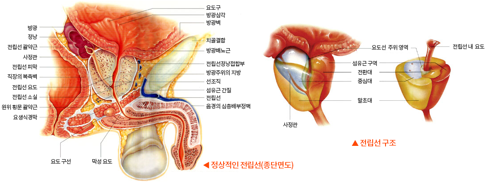
전립선 해부학적 구조 및 역할 안내 도식 (원본 의학 자료)
PROSTATE 02
전립선비대증
전립선비대증이란
전립선 비대증은 질병 이름대로 전립선이 비대해지는 질환입니다.
때문에 전립선 한가운데를 통과하는 요도를 압박하여 소변이 잘 안나오게 되거나 성기능 장애를 일으키기도 합니다.
중년이후 소변때문에 밤에 자다가 한두번 이상 일어나 오줌을 자주 누게되는 빈뇨증상을 보이게 되면 전립선 비대증을 의심하게 됩니다.
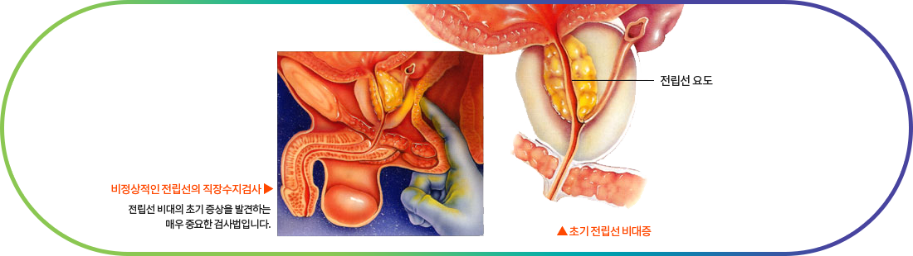
전립선비대증 해부학적 변화 도식
전립선비대증 증상
빈뇨
요도 폐색
성기능 장애
방광출구를 둘러싸고 있는 전립선의 비대하여 우선 그 부위를 압박하여 요도가 좁아지므로 방광에서 나오는 오줌줄기가 작아집니다.
따라서 비대정도가 점점 심해 가면서 오줌 누기도 점점 어려워집니다.
실제로는 반드시 그렇지는 않습니다. 실제로는 비대는 적으나 배뇨 장애는 매우 심한 반면,
전립선비대 정도에는 개인차가 있어서 반드시 전립선 크기와 증상은 비례하지 않는다고 믿어도 되겠습니다.
전립선은 크기만 가지고 비대증을 진단하지 않으며,
오줌누기의 여러 가지 자각증상, 전립선을 손가락으로 만져 보거나 영상으로 보거나 오줌 누기의 객관적 판단 등의 종합적인 평가가 필요합니다.
50대 이후의 소위 전립선 연령에서 오줌 누기가 정상이 아니라고 생각되면 될 수 있는 대로 속히 전문의의 도움을 받는 것이 현명합니다.
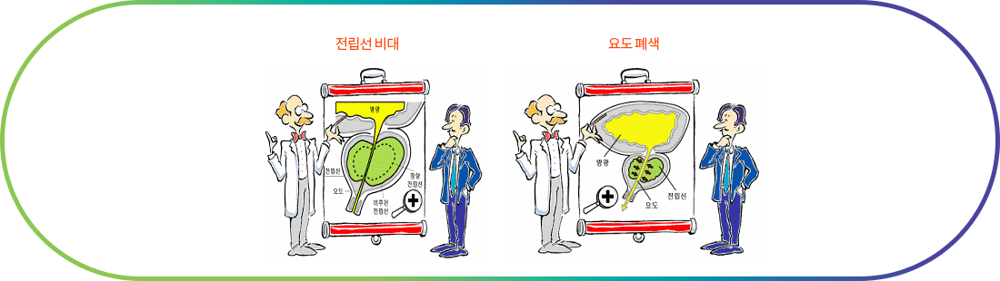
전립선비대증에 따른 증상 및 치료 방법 안내
전립선비대증에 따른 치료 방법은?
전립선 크기와 증상, 환자 상태에 따라 약물치료, HoLEP(홀뮴레이저 전립선종 적출술) 또는 유로리프트(전립선 결찰술) 중 가장 적합한 방법을 전문의와 상의하여 결정합니다.
PROSTATE 03 · GOLD STANDARD
HoLEP 시술 (홀뮴레이저 전립선종 적출술)
HoLEP란
HoLEP란 Holmium Laser Enucleation of Prostate 의 약자로
지난 1998년 뉴질랜드의 Dr. Gilling 에 의해 Holmium 레이저를 이용한 전립선종 적출술로
학회에 발표된 이후 유럽과 일본을 중심으로 널리 사용되고 있는 우리나라에서도 보건복지가족부 산하의 신의료기술 평가위원회부터
‘안전성, 유효성 인증절차를 거친 새로운 의료기술’이라는 평가는 받은 수술입니다.
조직의 침투 깊이가 0.4mm 인 End firing fiber 의 특징을 이용해서
전립선 요도관을 압박하는 비대 된 조직을 섬세하게 박리해(Micro Dissection) 제거할 수 있습니다.
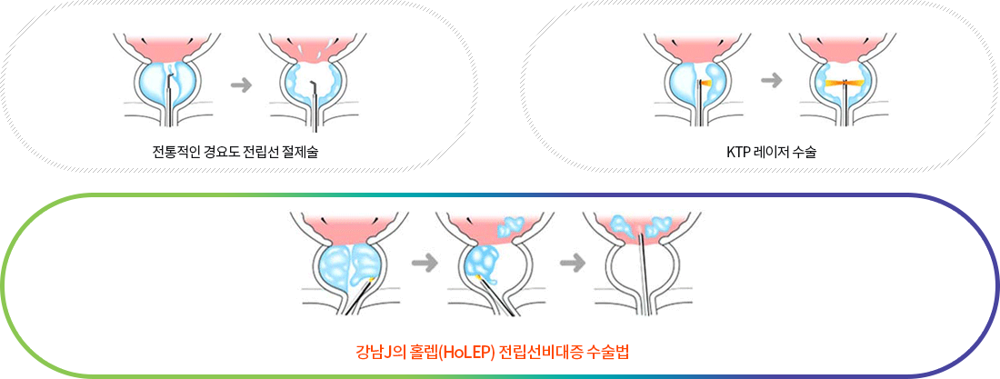
전립선비대증에 대한 근본적인 치료 방법은 다양합니다.
최근 신의료기술로 등록된 최첨단 홀뮴레이저(Holmium Laser)를 이용해서,
비대 된 전립선요도관을 안전하고(safe), 간편하고(simple), 빠르게(speed) 시술하는 시술방법이 도입되었고,
일본이나 유럽에서는 7년 전부터 시행되고 있습니다. 일명 홀렙(HoLEP-Holmium Laser Enucleation of Prostate) 치료법입니다.
비뇨기과 전문의의 검진을 받고 적절한 치료를 받는다면 한밤중에 일어나 화장실을 문고리를 잡는 일은 더 이상 없을 것입니다.
전립선 비대에 대한 적절한 치료로 숙면을 취할 수 있게 되면 낮에 젊은 사람 못지않은 활력을 되찾을 수 있습니다.
건강한 전립선은 활기찬 황혼의 전제조건이 됩니다.
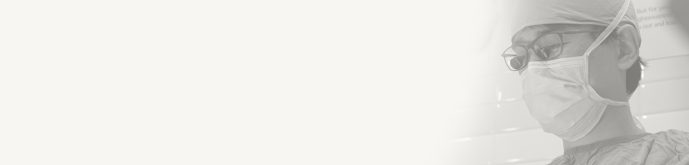
HoLEP 적용대상
80g 이상 되는 거대 전립선 비대증으로 기존 수술법으로 치료가 어려운 분.
기존의 수술 적 치료(TURP-경요도전립선절제술, PVP-전립선레이저기화술) 후 재발하거나 효과가 없으신 분
기존에 약을 복용하고 있으신 분으로 효과가 없으신 분.
수술 시 통증이나 합병증이 걱정되시는 분.
전신마취를 할 수 없는 분 - saddle block 마취
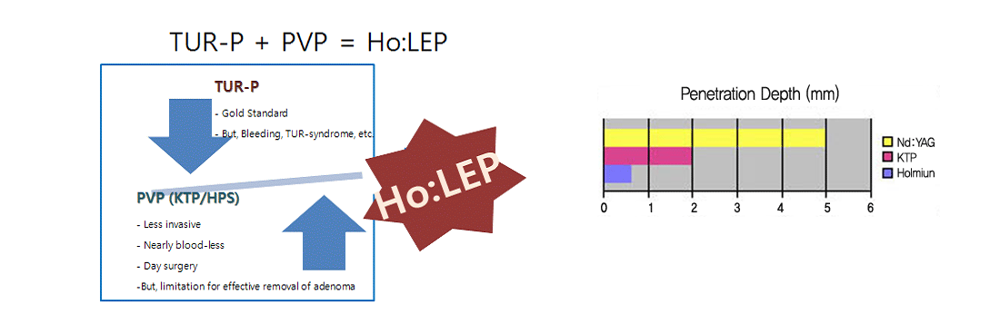
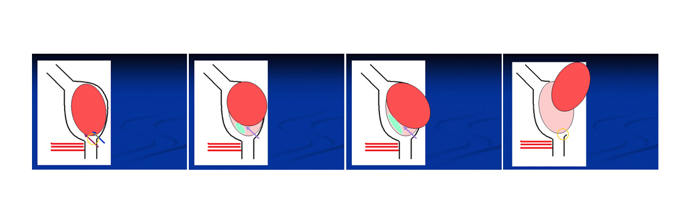
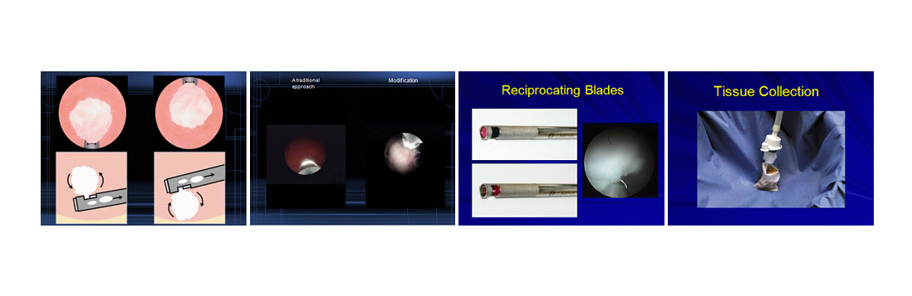
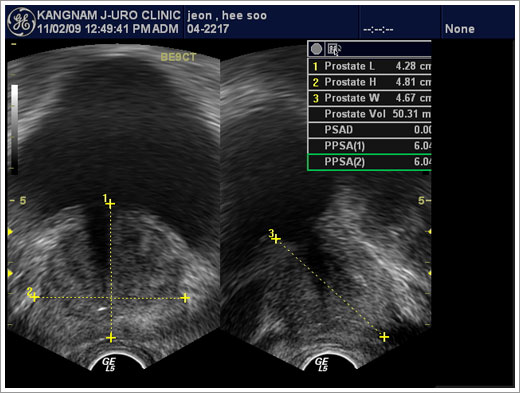
홀렙수술과 경요도 전립선 절제술 비교
비교 항목
HoLEP (내시경레이저 전립선비대 선종적출술)
TURP (경요도전립선절제술)
전립선 크기
200cc 이상 가능
80cc 이상 불가능
항응고제, 아스피린 복용
가능
부적용
수술 후 방광세척
불필요
반드시 필요
도뇨관 유치
단시간
장시간
수혈 가능성
1/10000 이하
10~15/100
회복기간
단시간
장시간, 수주
입원기간
6~24시간
4~7일
요도 및 방광경부협착 · 발기부전 가능성
상대적 적다
상대적으로 높다
기존 내시경으로 전립선을 절제하는 시술인 경도요전립선절제술은 전기 칼을 이용해서 지혈이 되지 않기 때문에 출혈이 많고,
열이 많이 발생하여 주변 정상조직에 손상을 줄 가능성이 높습니다.
또한 전신마취, 하반신 마취를 해야 하고, 시술 후에도 약 5~7일 간 소변줄 유치와 수일간 입원이 필요합니다.
이에 반해 HoLEP(전립선종 적출술) 수술은 전립선조직의 침투 깊이가 0.4mm에 불과하기 때문에
섬세박리(Micro Dissection)가 가능해 주변조직에 영향을 주지 않고 비대 된 전립선종만 정확하게 제거할 수 있습니다.
또한 과거에는 개복을 통해 수술을 할 수 밖에 없었던 방법이 내시경을 통해 가능해졌고,
Holmium 레이저 특성상 출혈이 거의 없고 지혈이 용이하기 때문에 수술 후 통증이 거의 없고
방광자극 증상(요급박을 일으키는 원인)이 없다는 것이 수술의 큰 장점입니다.
본원에서 시행하는 HoLEP(전립선종 적출술) 수술은 입원을 하지 않고, 당일 퇴원이 가능하고,
말안장마취(saddle)를 시행하기 때문에 2~3시간 정도의 회복시간 후 바로 귀가하실 수 있습니다.
또한 전립선결석 및 방광결석, 요도협착 증상으로 인한 배뇨장애 및 전립선통증을 동시에 치료하는 데에도 이용되고 있습니다.
HoLEP 수술의 3대 장점
마이크로 박리
완전 박리
방광결석·전립선결석 치료 가능
전립선 암 진단 가능
홀뮴레이저는 비대 된 전립선종을 적출하는데 매우 적합하고 효과적인 특성을 가지고 있습니다.
전립선조직에 침투하는 레이저는 약 0.44mm 로 적출되는 조직 이외에 정상적인 다른 조직에는 영향을 미치지 않고, 마이크로 박리가 가능하다는 특징이 있습니다.
다른 조직에 영향을 주지 않는다는 의미는 수술 후 방광자극 증상을 현저하게 줄일 수 있어 수술 후 빠른 회복이 가능합니다.
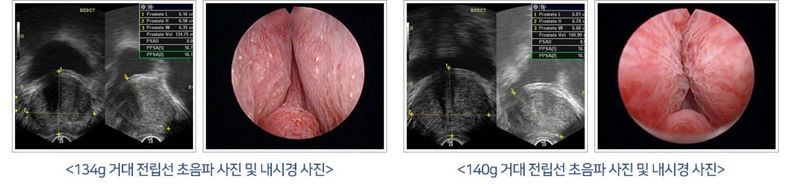
장점 2. 거대 전립선(80g 이상)도 전립선 피막을 제외한 완전 박리가 가능합니다.
현재까지 레이저의 특성을 보면 side firing fiber 로 비대 된 전립선조직의 완전제거가 사실상 어려웠기 때문에
수술 후 약 2~3년 정도가 지나면 배뇨장애 증상이 다시 나타날 가능성이 있었습니다.
하지만 홀뮴레이저는 end firing fiber 라는 특징이 있기 때문에 전립선크기에 상관없이 비대 된 전립선종만을 정확하게 적출할 수 있습니다.
전립선피막만 남기기 때문에 세월이 흘러도 배뇨장애가 다시 나타나지 않습니다.
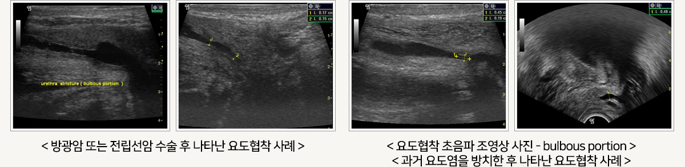
장점 3. 요도협착 및 전립선결석, 방광결석의 동시 치료가 가능하고, 미처 발견하지 못한 전립선암 진단이 가능합니다.
홀뮴레이저의 end firing fiber 는 요도협착으로 인한 배뇨장애를 효과적으로 치료 할 수 있습니다.
요도는 매우 부드럽고 섬세한 조직이기 때문에 섬세하지 못한 레이저로는 치료가 불가능했습니다.
하지만 홀뮴레이저를 이용한 요도협착 치료는 매우 성공적입니다.
또한 방광결석이나 전립선결석의 치료가 가능하고 적출된 전립선조직을 분쇄기를 통해 밖으로 배출하므로 미처 발견하지 못한 전립선암을 진단할 수 있습니다.
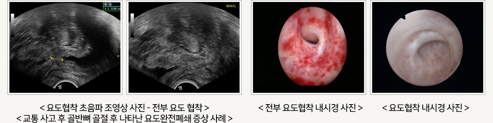
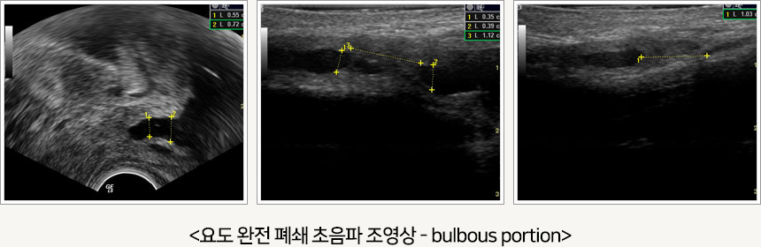
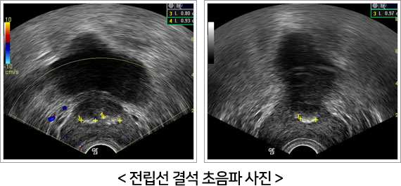
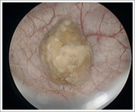
원본 저해상도(280×232px) 비율 유지 표시
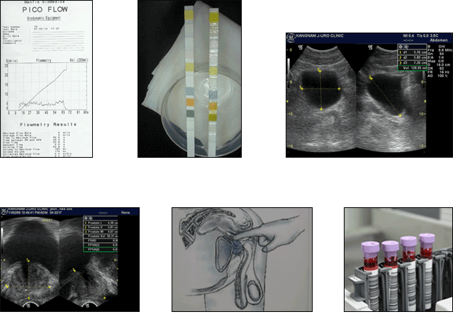
WHY HoLEP 시스템
Treatment (치료방법)
Onset
하부요로증상
요속
전립선 크기
잔료량 (PVR)
질병의 진행
총점수
Holep (홀렙)
hours
★★★★
★★★★
★★★★
★★★★
★★★★
20
Open Prostatectomy (개복수술)
hours
★★★★
★★★★
★★★★
★★★★
★★★★
20
TUMT
weeks
★★★
★★★
★★
★★
★★★
13
TUNA (온열치료)
weeks
★★★
★★★
★★
★
★★
11
TURP-TUIP (경요도전립선절제술)
hours
★★★★
★★★★
★★★
★★★★
★★★★
19
KTP (광선택 레이저 기화술)
days
★★★
★★★
★★
★★
★★★
13
- no influence(효과) / ★ mild influence / ★★ moderate influence / ★★★ strong influence / ★★★★ very strong influence(매우 강한 효과)
Conclusions / 결론
at the present point, HoLEP is considered to be a... True alternative to TURP / Open Prostatectomy? YES!! Gold standard for BPH surgery?
전립선비대증 수술 적 치료의 현재 시점에서... 경요도전립선 절제술은 개복수술의 대안으로, 홀렙(HoLEP) 수술은 최고의 표준 치료법으로 간주됩니다.
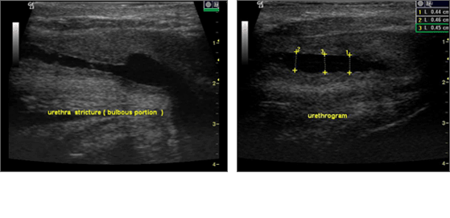
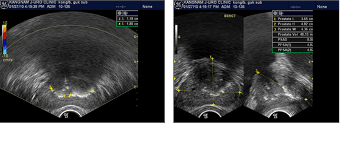
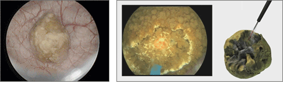
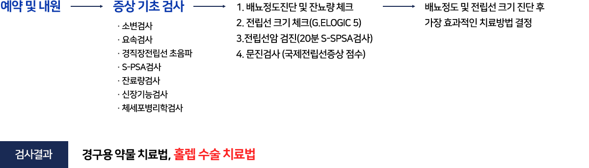
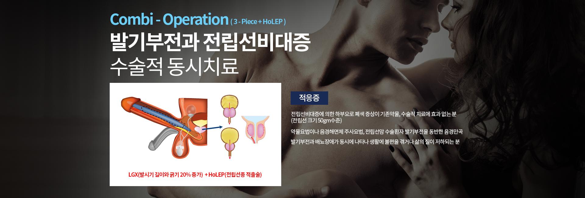
질환별 HoLEP 적용 대상 및 수술 전 검사 항목
양성 전립선비대증
전립선비대증에 대한 약물을 복용하고 있는 분으로 증상 개선이 없는 경우
기존의 열치료 (TUNA, TUMT)와 경요도전립선절제술(TURP)에 효과가 없는 경우
수술 시 또는 수술 후 통증이나 합병증이 걱정되시는 분
전립선 크기가 80g 이상인 분으로 기존의 레이저치료가 불가능하신 분
경요도전립선 절제술 또는 레이저기화술 수술 후 수 년 후 증상이 다시 나타나시는 분
평소 방광자극 증상으로 요급박이 있으신 분
수술 후 바로 일상으로 복귀를 해야 하는 분
요도협착
과거의 특별한 병력으로 인한 요도협착
요도내시경 수술 후 나타난 요도협착
요도염 또는 요도 내 곤지름 치료 후 나타난 요도협착
수년 간 자가 도뇨를 하고 계시는 분
전립선결석
전립선결석으로 인해 전립선염의 재발이 잦은 분
전립선결석으로 인해 회음부 하복부 및 고환에 통증을 호소하는 분
전립선결석으로 인해 배뇨가 불규칙 하신 분
방광결석
기존 체외충격파 시술(ESWL)로 치료가 어려운 방광결석의 경우
방광결석으로 배뇨시 혈뇨가 나오는 분
방광결석으로 아랫배 통증이 심하신 분
홀렙(HoLEP) 수술 전 검사 항목 및 시스템
양성 전립선비대증 · 요도협착 · 전립선결석 · 방광결석 각각의 상태에 맞춘 수술 전 정밀 검사를 거쳐 홀렙(HoLEP) 수술 시스템을 안전하게 적용합니다.
PROSTATE 04 · UROLIFT
유로리프트 (전립선 결찰술)
전립선비대증의 새로운 치료법
비대해진 전립선을 자르거나 레이저로 태우지 않고 특수하게 제작된 이식용 의료결찰사로 전립선 양쪽을 묶어주어 크기를 줄여줍니다.
전립선 결찰술이라고도 합니다.
유로리프트 수술과정
국소마취/하반신 마취 · 10분~20분 소요
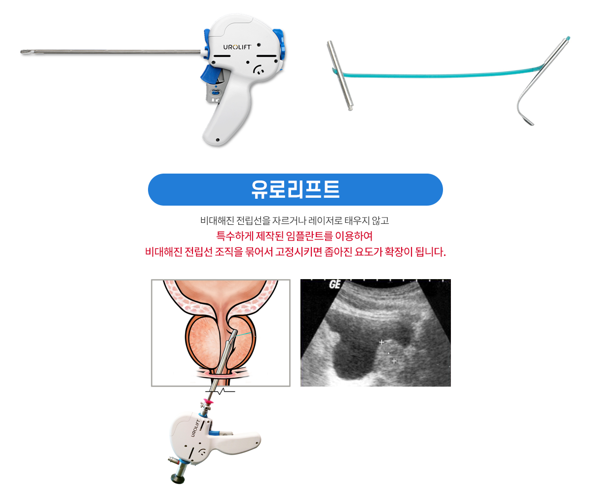
유로리프트 수술과정 도식
유로리프트 수술특징
2013년 미국 FDA허가
피부 절개가 없어 봉합 불필요
당일 수술 · 당일 퇴원
수술 후 즉시 일상생활
발기부전 사정장애 없음
역행성 사정 없음
요실금 요도협착 등의 부작용이 거의 없음
내시경으로 수술이 진행
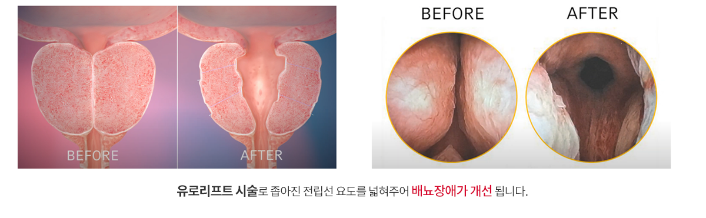
유로리프트 수술 전 후 변화 도식
유로리프트 수술 후 주의사항
무거운 물건을 들거나 무리한 운동을 피해주세요.
수술 후 4주 간 흡연과 음주를 피해주세요.
수술 4주 후 부터 성생활이 가능합니다.
PROSTATE 05 · PROSTATITIS
전립선염
전립선염이란
비뇨기과적으로는 4배분뇨법에 의한 급성 세균성 전립선염, 만성 세균성 전립선염, 비세균성 전립선염, 그리고 전립선 통의 분류를 보편적으로 사용해 오고 있습니다.
지금까지는 전립선염증후군 환자의 10% 이하인 세균성 전립선염 환자들에 대하여만 대부분의 연구가 진행되어 왔습니다.
불임학적으로는 정액 안에 백혈구가 증가된 농정액증 소견을 보일 때를 말합니다.
전립선-정낭염, 부고환-전립선-정낭염, 남성 부성선염, 정낭염(seminal inflammation) 등으로 불리며 이중에서 정낭염이란 용어가 보다 보편적으로 사용되고 있습니다.
대부분 불임 환자들을 대상으로 자료가 발표된 것이고, 백혈구가 전립선 외에도 정낭이나 구부요도선 등 다른 부위에서 나올 수 있으며
정액내의 백혈구증가 소견이 전립선염의 증상이나 전립선염이 있는지의 여부와 세균성인지 아닌 지와의 연관성이 적다는 단점이 있습니다.
임상적인 진단으로는 전립선액에서 백혈구증가 소견이 보이지 않는 경우에도 만성 전립선염에서 흔히 관찰되는 회음부 동통과 같은 전립선 증상을 호소하면 전립선염으로 진단하는 것입니다.
환자의 입장에서는 많은 검사보다 우선 증상에 준하여 치료를 받음으로써 증상이 빨리 개선되는 긍정적인 면이 있습니다.
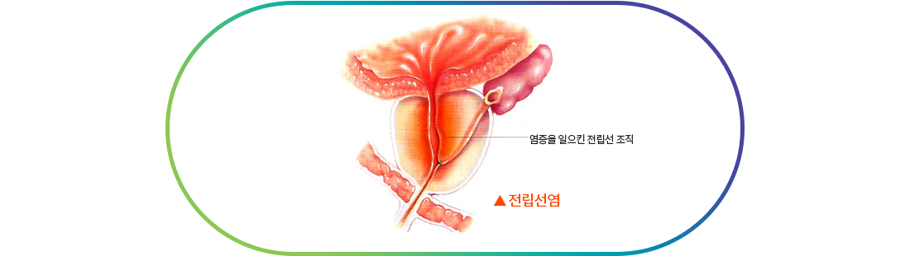
전립선염 개요 및 분류 안내 도식
전립선염의 증상
여성에서는 콩팥과 방광의 비뇨기계와 임신과 관련한 생식기계가 완전히 분리되어 있으나
남성에서는 비뇨기와 생식기가 분리되어 있지 않고 전립선에서 만나서 요도를 통해 소변과 정액이 나온다.
사정시에 소변이 나오지 않고 아침에 발기가 되었을 때 소변이 잘 나오지 않는 것은 복잡한 신경분포로 구성된 특별한 장치가 전립선 내에 있어 작동하기 때문이다.
따라서 이러한 전립선에 병이 생기면 배뇨증세와 동통과 같은 신경통, 그리고 성기능에 관련한 증세가 다양하게 발현될 수 있다.
특징적인 전립선 질환 6가지
고환과 항문사이(회음부)의 통증이나 불쾌감
고환의 통증이나 불쾌감
소변보는 것과 관계없는 성기의 끝의 통증이나 불쾌감
허리 이하의 치골(불두덩이) 혹은 방광부위(아랫배)의 통증이나 불쾌감
배뇨통
성관계시 절정감을 느낄 때(사정시) 또는 그 이후의 통증이나 불쾌감
전립선염의 원인과 치료
1. 급성 세균성 전립선염 (NIH Category I, Acute Bacterial Prostatitis)
세균성 전립선염의 발생과정은 직장내 균들의 직장으로부터 직접 전파 및 림프관을 통한 감염이나 요도로부터의 상행성 감염, 혹은 요도 카테타와 연관되어 감염되는 경우와 성관계로 인한 전염과 혈행성 감염 등이 있을 수 있으나 요도로부터의 상행성 감염이 가장 많다.
급성전립선염은 갑작스런 고열과 오한, 하부요통, 회음부통증, 빈뇨, 요급박, 야간뇨, 배뇨통 및 배뇨곤란 등 방광 하부폐색증상을 보이고 근육통, 관절통의 증상으로 나타난다. 전립선의 직장촉진에서 매우 심한 압통, 부종과 온열감 등의 소견을 나타내므로 쉽게 진단할 수 있다. 세균혈증을 유발할 수 있으므로 전립선 마사지는 금기이다.
치료는 일반적인 대증요법을 하면서, 항생제를 투여하면 비교적 잘 치료된다. 일반적인 대증요법으로 안정가료하면서 해열진통제를 투여하고, 충분한 수분을 섭취시키고, 대변 완화제 등을 투여하여 변비를 예방한다. 급성 요폐가 발생했을 때에는 입원가료를 원칙으로 하고, 치골상부천자로 배뇨시키는 것이 제일 좋은 방법이다.
항생제는 감수성 검사에 의한 투여를 원칙으로 하고 혈중농도가 충분히 유지될 수 있는 용량을 투여하여야 한다. 열이 없어지고 나서 48시간이 지나서부터 경구제제로 바꾸어 투여한다. 대부분 2주면 증상이 호전되나 만성 세균성 전립선염으로 되는 것을 방지하기 위하여 30일 동안 투여하는 것을 권장한다. 하지만 적절하게 치료를 하여도 만성 세균성 전립선염으로 발전할 수 있으며, 그 빈도는 알려져 있지 않다.
2. 만성 세균성 전립선염 (NIH Category II, Chronic Bacterial Prostatitis)
재발성 요로 감염의 한 원인 질환으로 증상은 매우 다양하게 나타나며, 종종 무증상의 세균뇨 소견을 보이기도 한다. 전립선액이나 전립선 마사지 후 소변에서 균이 배양되는 경우에 진단되며 치료는 항생제 치료가 기본적이다.
전립선 결석은 나이가 증가하면서 자연히 생기는 경우가 많고 전립선 증상이 없는 일반인에서도 많은 빈도로 관찰되고 있으므로 결석 자체가 문제가 되지는 않는 것으로 사료되지만 결석이 있는 환자에서 전립선염이 동반되며 치료가 잘되지 않는 경향이 있다. 특히 만성 세균성 전립선염인 경우에는 결석과 함께 전립선을 제거해주면 이론적으로 완치를 기대할 수 있을 것이다. 하지만 전립선염이 주로 생기는 말초대를 경요도로 절제한다는 것은 매우 힘들고, 역행성 사정과 성기능 감퇴 등의 수술후의 후유증을 고려한다면 이러한 시술은 매우 부정적이라 하겠다.
항생제 치료와 함께 일반적인 대증요법으로 가급적 술과 커피와 자극적인 음식을 피하고, 온수좌욕과 주기적인 사정과 규칙적인 전립선 마사지와 함께 배뇨자극 증상을 개선하기 위하여 소염제나 항콜린제를 투여한다.
o 염증성 만성 골반통 증후군 (Category IIIa, Inflammatory CPPS)
전립선염 증후군 중에서 가장 많은 환자가 이 군에 속한다. 원인은 아직까지 명확하게 규명되지는 않았으나 자가면역질환, 전립선관내로의 요역류, 바이러스성 등의 가설이 있다.
① 항생제 치료: 항생제를 우선 투여하고 나서 치료에 반응하는지에 따라 치료 방침을 잡는 방법이 제시되고 있다. 비세균성이지만 먼저 2주간의 항생제를 투여하고 나서 증상의 호전이 있으면 세균성 전립선염 즉 Category II의 치료시에 투여하는 항생제를 동일한 기간동안 투여해야 한다. 항생제를 투여하는 기간은 적어도 2주 이상이며, 효과가 분명하지 않으면 6~8주 이상 항생제를 투여하지 말아야 한다.
② Krisiloff 식이요법: 1,710명의 만성 비세균성 전립선염 환자들에게 12주간 술, 커피같은 카페인이 들어있는 식품과 자극적인 음식을 피하도록 하는 Krisiloff 식이요법을 시행한 결과 다른 약물 투여 없이 87%에서 증세가 상당히 개선되었다. 따라서 이러한 식생활을 병행하는 것이 좋다.
③ 규칙적인 성생활, 전립선 마사지, 온좌욕: 규칙적인 성생활에 의한 전립선액의 배출이 가장 중요하다. “접하되 설하지 않는다.”는 동양적인 성사고 방식이 오히려 전립선 증상을 악화시킨다. 따라서 억지로 사정을 막지 말고 주 2회 정도의 규칙적인 부부생활로 전립선액을 배출해 주도록 하는 것이 좋다. 전립선 마사지는 주 2~3회가 좋으며 병원에 자주 내원하기가 힘든 경우에는 배우자에게 도움을 받는 것도 좋다. 온좌욕은 전립선과 회음부의 근육을 이완시켜 통증을 완화시키고 염증 분비물의 배설을 촉진하며, 혈액순환을 증가시켜 전립선 세포 내로의 산소분압이 증가되어 근세포의 회복과 부종을 감소시킨다.
④ 알파차단제: 방광 경부와 전립선에 위치한 알파 수용체를 차단함으로써 배뇨개선과 통증을 완화시켜준다. Terazocin이나 doxazocin 2~4mg으로 효과가 좋음 8~10mg을 투여하는 경우도 있다. 대부분 투약을 중지하면 증상이 재발하는 경향이 있다.
⑤ 항염증제: 프로스타글라딘(prostaglandin) 생성을 억제함으로써 통증을 줄인다. 최근 COX-2 억제제가 많이 개발되어 임상실험 중이다.
⑥ Finasteride: 전립선 증식에 작용하는 dihydrotestosterone 생성을 억제하는 약물로서, 만성 골반통 증후군 환자에서 시도하는 것은 finasteride가 전립선의 성장과 기능이 안드로겐에 영향을 받으며, 동물실험에서 비세균성 전립선염이 전립선 호르몬들에 영향을 받는 것으로 추측되고, 배뇨시 전립선관내로의 역류를 줄이는 잠재적인 영향을 주는 것으로 추측하고 있다.
⑦ 생약제: 면역시스템의 활성, 항염효과, 진통효과, 진경효과 등의 작용으로 사용되고 있다. 유럽이나 미국에서는 건강식품점에서 많이 판매되고 있으며, 약초나 생약제로 종려나무열매(saw palmetto), 안젤리카나무 뿌리(Dong Quai), 마늘줄기, 호박씨, 아프리카 상록수 껍질(pygeum) 등이 있으며, 화분추출물 등이 있다.
o 비염증성 만성 골반통 증후군 (Category IIIb, Non-inflammatory CPPS)
방광경부와 전립선요도의 기능이상이나 골반긴장성 근육통, 혹은 스트레스 등으로 생각하고 있다. 요류역학검사에서 특징적으로 최대요속이 감소되어 있고, 배뇨시에 방광내압이 낮은 소견을 보인다. 배뇨시에 외요도괄약근의 근전도가 증가되는 배뇨근-괄약근 협조장애가 나타난다. 즉 방광경부와 전립선요도의 기능이상으로 인하여 소변의 전립선관내로의 역류 등 전립선을 자극하여 증상이 유발될 수 있다. 또는 골반근육이 습관적으로 수축하거나 긴장을 하면 통증이 유발될 수 있다. 앉거나 뛰는 등의 골반근육에 피로를 유발하는 활동을 할 때에 회음부 불쾌감이나 통증이 유발된다. 이러한 경우를 골반긴장성 근육통이라 하며, 직장수지 검사에서 골반근육의 압통을 느끼는 경우가 있다.
① 항생제 치료: 세균성 전립선염이 비염증성 만성 골반통 증후군으로 진단될 수 있으므로 2~4주간 항생제를 투여한다. 만약 항생제 투여로 호전이 명확하게 있으면 세균성 전립선염에 준하여 치료해야 한다.
② 근육이완제: 평활근 이완제로서 알파차단제가 배뇨개선과 통증 경감의 목적으로 사용된다. 골격근 이완제로 benzodiazepam 계통의 약물, 즉 diazepam, xanax 등과 baclofen이 골반근의 긴장성 근육통이 있는 환자에 유용하게 사용된다.
③ 진통제: 진통제는 장기간 투여하지 않도록 하며, 마약성 진통제는 피하는 것이 좋다.
④ 바이오 피드백 치료 및 전기자극 치료: 골반근의 긴장을 완화하고 잘 이완하도록 도와주는 것이 목적이다. 배뇨시에 여유를 갖게하고 힘을 주거나 급하게 배뇨하지 않도록 한다. 이완이 잘되면 통증도 경감하면 요속도 증가된다.
⑤ 물리치료: 회음부의 압통을 느끼는 부위를 중심으로 근육 마사지 치료를 시행하여 통증을 경감시킨다.
⑥ 스트레스 경감
⑦ 대증적인 치료: 의자나 운전석에 쿠션을 두거나 회음부에 압통이 가지 않도록 고안된 도넛 모양의 쿠션을 사용하거나 자전거 타기를 하지 않는 등 딱딱한 자리에 오래 앉지 않도록 한다. 또한 전립선의 울혈을 방지하기 위하여 규칙적인 성생활과 주기적인 전립선 마사지를 받으면서 가급적이면 술, 커피, 자극적인 음식을 피하는 것이 도움을 준다.
4. 무증상 전립선염 (NIH Category IV, Asymptomatic Inflammatory Prostatitis)
무증상 전립선염은 대부분 치료할 필요가 없다. 하지만 불임으로 내원한 환자에서 우연하게 발견돼 농정액증에서 전립선검사를 시행한 결과가 정상소견이라면 정낭의 염증을 의심하게 된다. 이러한 경우는 정자의 운동성을 증가시키기 위하여 2~3개월의 항생제 치료를 요한다.
또한 전립선 특이항원(prostate specific antigen, PSA)이 비정상적으로 증가하여 전립선 조직검사를 시행한 후에 전립선염이 발견될 경우에는 4~6주정도 항생제 치료를 시행하고 PSA의 변화를 관찰하는 것이 필요하다.
만성전립선염 환자들이 종종 전립선염 때문에 나중에 암이 되는 것이 아니냐는 질문을 한다. 현재로서는 밝혀진 바가 없으나 암과는 무관한 것으로 알려져 있다.
PROSTATE 06 · PROSTATE CANCER
전립선암
전립선암이란
전립선암은 어느 정도 진행된 후 진단이 되는 경우가 많이 있습니다.
이때는 이미 척추나 뼈로 암세포가 전이 되어 그 부위의 통증을 호소하는 경우도 있고
암 덩어리가 커진 경우 직장검사에서 전립선 비대증에 비해 딱딱하게 만져질 수 있으나 증상은 비슷하게 나타납니다.
전립선내에는 복잡한 신경분포와 전립선 주위에 그물망 처럼 신경들이 있어 통증정도가 다양하며 위에 언급한 배뇨증상 외에도
성기능 저하, 사정통, 조루, 성욕 감퇴 등의 성에 관련된 증세도 초래할 수 있어 증상만 갖고 어떤 질환임을 구분하기는 매우 어렵습니다.
전립선암 원인
유전적 소인
남성 호르몬의 영향
음식 및 식이습관과 직업
전립선암 진단
직장 초음파 검사가 유용하며 전립선암은 발생초기에는 주목할 만한 증상이 없습니다.
증상이 없다는 것이 초기암의 특징이라고 할수 있겠습니다.
암은 전립선 주변부 (직장을 통하여 손가락으로 만져 볼수 있는 부위)에서 시발하는 것이 약 75%이므로,
경험있는 비뇨기과 전문의가 이러한 초기암을 발견할 수 있는 확률은 75-80%입니다.
즉 전립선 주변부에서 특이한 전립선의 탄력성과 고무와 같은 촉감과는 달리 딱딱하(때로는 돌과 같이 단단하다)게 만져지는 경결이 있으면, 거의 틀림없는 전립선암입니다.
그 사람의 운명을 결정짓는 순간이 비뇨기과 전문의 손가락검진에서 결정됩니다.
그러나 전립선 주변부 이외의 부위, 즉 중앙부와 이행부에 발생하는 25%의 조기암은 손가락 촉진으로 확인 할 수가 없습니다.
그러나 최근에는 초음파검사 및 전립선암에서 분비하는 종양마커 즉, 전립선 특이항원을 혈액에서 검사하여, 확진 및 암의 진행정도를 판단할 수 있습니다.
전립선암 치료
암의 진행정도에 따라 치료법을 선택합니다. 진행단계에 따라서 수술적인 요법, 호르몬 치료, 방사선 치료가 사용되며 경우에 따라 위의 방법들이 병용해서 사용될수 있습니다.
무엇보다도 조기에 발견하여 치료함이 중요합니다.
PROSTATE 07 · PROSTATODYNIA
전립선통
만성 비세균성전립선염과 전립선통
미국의 경우 비뇨기과외래로 내원하는 남성의 25%가 전립선염증상에 의한 것이라고 하였으며
우리나라에서도 개원 비뇨기과 내원환자의 약 15-25%가 전립선염증후군으로 추정될 만큼 매우 흔한 질환입니다.
이렇게 흔한 질환이지만 많은 의사들은 전립선염/전립선통의 원인이나 발생기전 및 치료에 있어서 뚜렷한 지침의 설정도 되어 있지 못한 편입니다.
전립선염 증상 환자 600명의 분포조사결과 5%는 세균성 전립선염, 64%는 비세균성 전립선염, 31%는 전립선통의 분포를 보였습니다.
일부 학자는 만성전립선염 증상을 가진 환자 80%가 전립선통이라고 보고하였습니다.
예전에는 전립선염과 전립선통을 구분하였으나 최근에는 양자간에 구분을 하지 않는 경향이 있습니다.
왜냐하면 전립선통이 있는 환자에서도 가끔 다수의 백혈구가 검출되기도 하며 또한 치료방법도 동일하기 때문입니다.
직업과 전립선통증증후군의 연관성
장기간 오래 앉아서 일을 하거나 소변을 오래 참는 경우에 전립선통을 호소하는 경우가 종종 있습니다.
예를 들면 직업운전자나 앉은 자세로 오래 일하는 직업을 가진 경우입니다.
일부학자들의 연구에 의하면 택시기사 405명과 전립선염 환자 93명을 비교한 결과 증상 점수가 전립선염환자와 유사하게 높았고,
전립선초음파검사상 석회화가 55%에서 관찰되었고 전립선액에서 백혈구가 다수 나타났습니다.
성기능약화와 조루증세가 45.5% 및 37.6%로 전립선염 환자와 비슷하였습니다.
따라서 저자들은 특수환경 즉 앉아있는 자세와 스트레스, 긴장, 소변의 오래 참음 등이 많은 택시기사의 경우 전립선통증세가 전립선염환자군과 유사하게 나타났음을 강조하였습니다.
한편 1998년 미국비뇨기과학술대회에서 미국보스턴대학의 Erwin Goldstein 교수는
사이클선수들이 다른 운동선수에 비해 배뇨장애 및 성기능장애(발기장애, 사정장애, 여성의 불감증등)의 빈도가 높다고 발표하였습니다.
즉, 사이클링같이 좁은 좌석에 앉아서 회음부를 자극시키는 운동을 하게 되면 골반 근육의 긴장성 통증과 경련을 유발하고
이로 인한 요도 괄약근의 경련으로 배뇨 곤란 증상과 전립선통 증상이 나타나고
골반 근육과 연관된 구부해면체 및 좌골해면체 근육의 기능이 원활치 못함으로서 발기 및 사정 장애를 초래한다고 하였습니다.
전립선통의 치료
약물치료
알파 1- 아드레날린 수용체 차단제: 방광경부나 전립선부 요도는 알파 1 - 아드레날린수용체가 풍부하므로 알파 1-아드레날린 수용체 차단제를 사용하면 전립선통의 다수에서 관찰되는 방광경부 및 요도의 과도한 수축을 억제할 수 있습니다.
골격근 이완제: 전립선통이 있는 다수의 환자에서 골반근육의 긴장성 근육통 내지 외요도괄약근의 수축소견이 있으므로 골격근을 이완시키는 약제를 투여하여 치료효과를 얻기도 합니다.
항생제: 만성전립선염치료에 준하여 투여한다.
항콜린 및 평활근이완제: 방광의 수축이상(배뇨근 불안정)이 동반되면서 빈뇨, 야간빈뇨, 요절박감들 방광자극증상을 많이 호소하는 경우에 투여한다.
향정신성 약제: 이들 약제는 중추에서 serotonin의 재흡수를 억제함으로서 통증완화작용을 한다.
초단파 온열요법
온열요법의 치료근거는 열에 의한 균증식억제나 살균작용, 전립선 평활근 및 방광경부의 알파아드레날린 수용체 파괴에 의한 수축반응소실, 전립선의 면역반응강화 또는 전립선내로 약제 침투성증가 등의 치료이점이 있습니다.